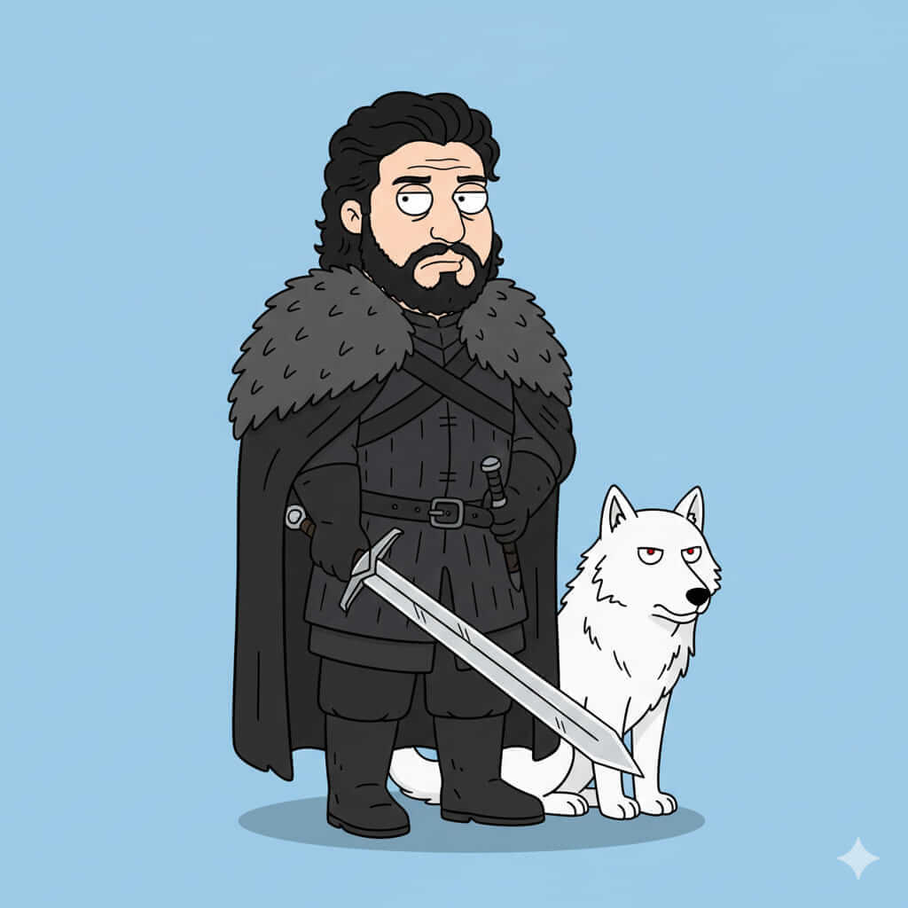

Joren Snawd
Historia
Joren Snawd creció en las frías tierras del norte, donde los vientos cortantes y la nieve perpetua moldearon su carácter y templaron su espíritu. Desde niño fue entrenado en el arte de la guerra y en la supervivencia extrema, aprendiendo a respetar tanto la fuerza de la naturaleza como la importancia de la lealtad. Su infancia estuvo marcada por amenazas constantes, ataques de bandidos y la necesidad de proteger a su hermana y a su gente, lo que hizo que desarrollara un instinto protector casi instintivo. Su reputación creció entre los clanes del norte como un guerrero valiente y honorable, capaz de enfrentarse a gigantes y bestias salvajes por igual.
A medida que se convirtió en adulto, Joren comprendió que ser líder no solo requería fuerza, sino también juicio y paciencia. Su vínculo con Serya Starfell, su hermana, y con los habitantes de las tierras heladas del norte, se convirtió en el eje de sus decisiones. Su vida es una constante lucha entre proteger su hogar y enfrentarse a las intrigas del sur, donde las casas poderosas buscan imponer su dominio. Joren está destinado a ser un símbolo de resistencia en Throonia, un faro de honor en medio del caos que amenaza con consumir al reino.
Casa y relaciones
Casa: Starfell.
Familia: Serya Starfell (hermana), linaje de guerreros honorables del norte.
Aliados: Otros clanes del norte y pequeños señores leales a Starfell.
Enemigos: Targheris, Blackmaw y los traidores internos que amenazan la estabilidad del norte.
Habilidades y personalidad
Espíritu indomable - Instinto protector y lealtad absoluta - Fortaleza física y mental.
Personalidad firme, determinada y noble, con un fuerte sentido del honor.